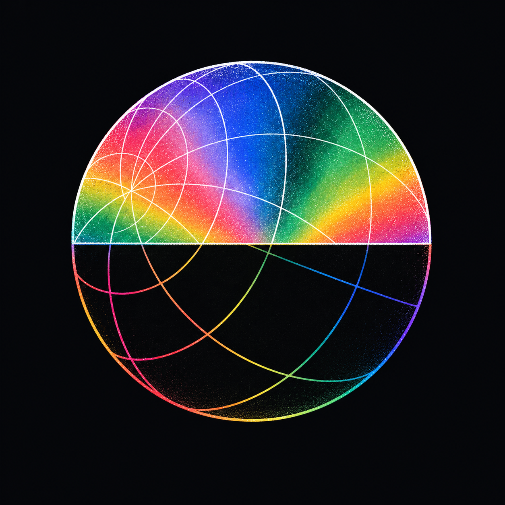
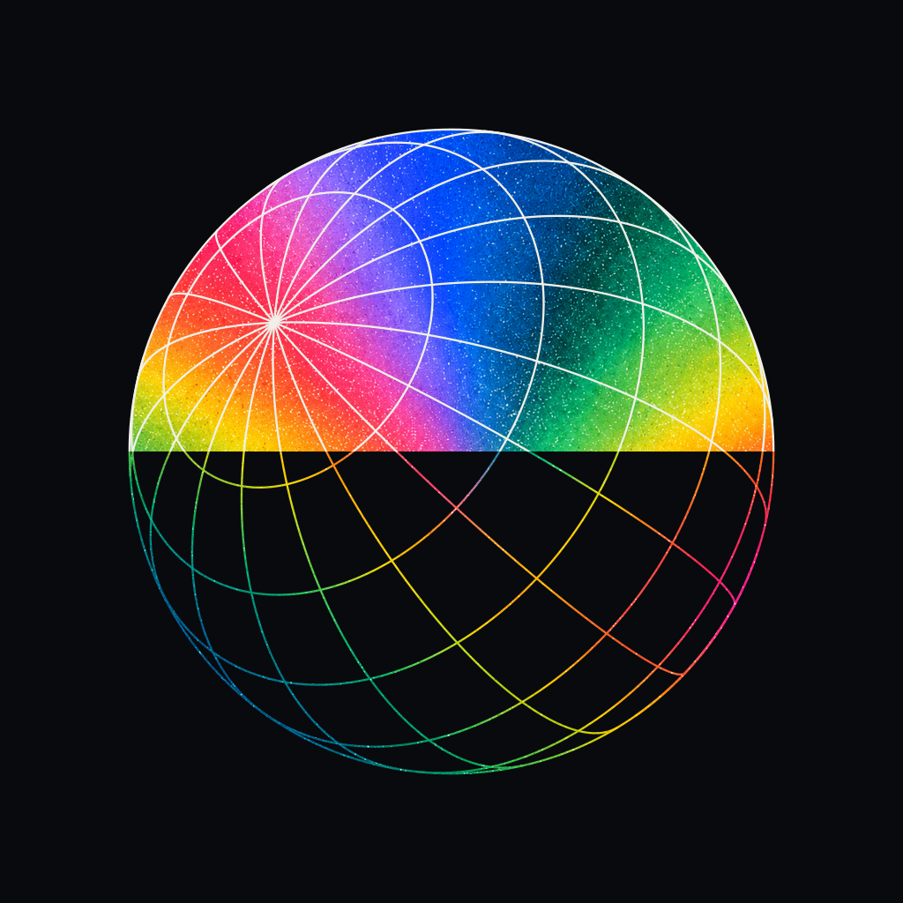
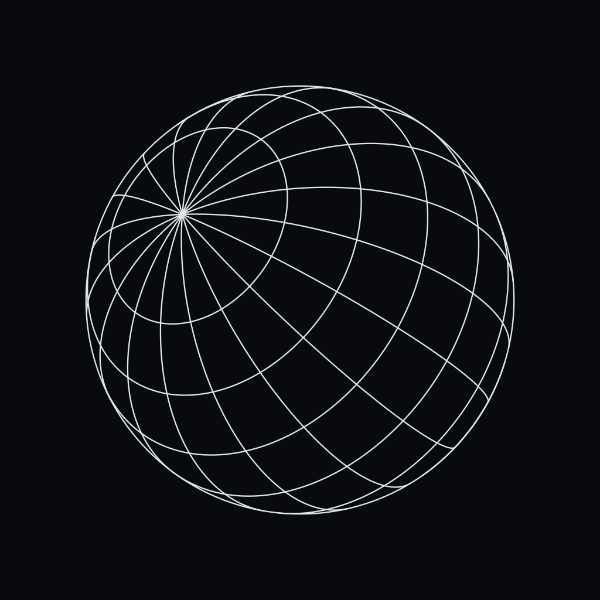
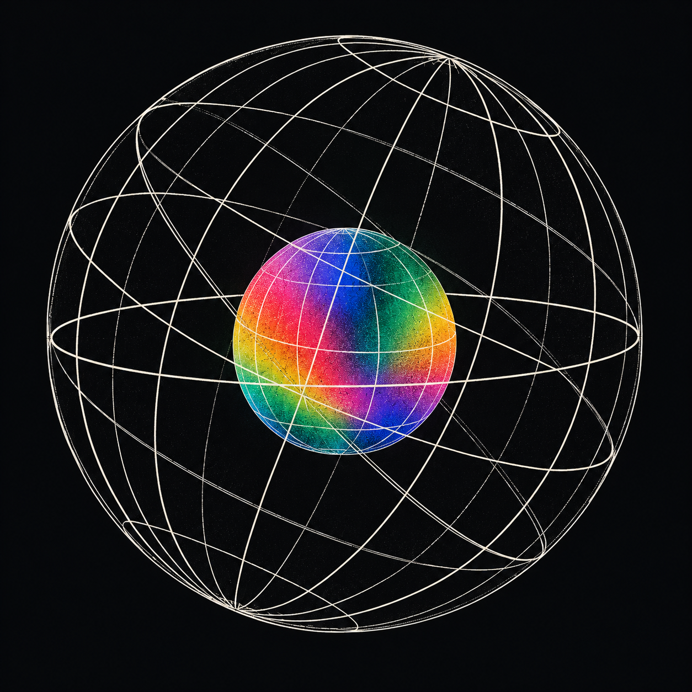
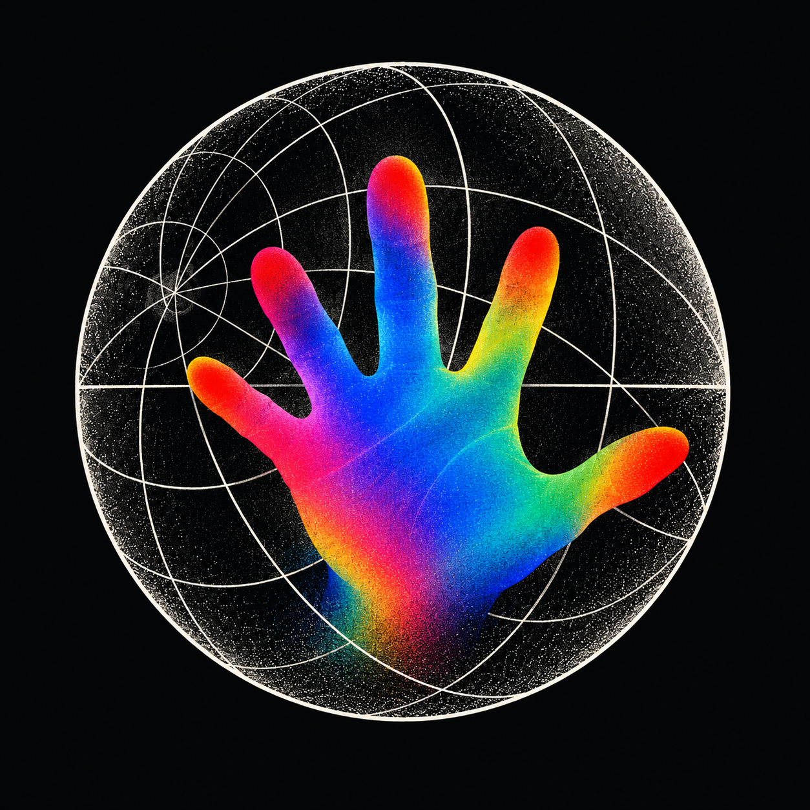

AETHER / ONE SPHERICAL STRUCTURE / 05
同一个球面，切换颜色。
E2-v2 上下两半共用完整的球面经纬曲线；中线只划分填色与线色。
旁边保留原稿和纯结构图，便于核对轮廓的接续。

原稿 · 结构问题
保留用户认可的风格记录；上下曲线存在不一致，已由 v2 重建。

共享球面 · 修正版
PNG ↙同一球心、轴向与投影；两种颜色区域引用同一套完整曲线。

完整结构
SVG ↙去掉色彩分区，直接查看所有经纬线的整体关系。
两个新构图

空结构／内彩球
原图 ↙外层留黑，由灰白经纬线构成；内部是彩色球体。

黑白球／彩色伸手
原图 ↙黑白球面与彩色手形成反差，遮挡关系表现向外伸出的动作。